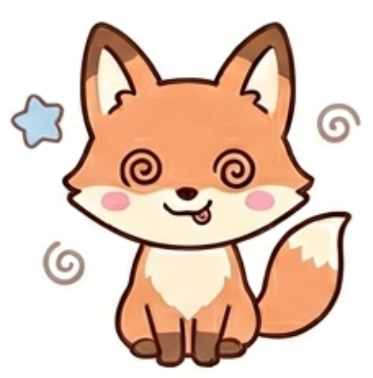

あなたのフレンドタイプは...

GSPH：鈍ギツネ
あなたは、流行や他人のペースに一切流されることのない、究極のマイペース人間です。内面に非常に頑固なこだわりや「マイルール」を秘めており、自分が心地よいと思えないことには絶対に首を縦に振りません。基本的にはインドア派で、一人でゆっくり過ごすのが大好きです。
しかし、決して心を閉ざしているわけではなく、自分の好きなもの（特定の食べ物、音楽、趣味など）に対しては異常なほどの愛着を示す、少しオタク気質でミステリアスな不思議ちゃんタイプです。
友達はあなたのことを、一般的な常識やルールで縛ることのできない「野生の生き物」のように思っています。
遊びに誘われたときも、「え〜、家出たくない」「めんどくさい」と最初は全力で拒絶するのに、いざ連れ出されてみると、グループの端っこで自分のお気に入りのグミを黙々と食べながら、ずっとニコニコと楽しそうにしています。
自分から輪の中心に入って喋ることはありませんが、友達はあなたのその「全く他人に気を遣わせない、独特でゆるい空気感」にめちゃくちゃ救われています。あなたがそこにポツンと座っているだけで場が和むため、友達はあなたを「愛すべきペット」や「守るべき絶滅危惧種」のように扱い、無条件に甘やかしてくれているはずです。
あなたには一切のトゲや「マウンティング」が存在しないため、友達はあなたといるときだけは完全にリラックスし、脳のスイッチを切って素の状態で過ごすことができます。
他人の意見でコロコロ態度を変えないため、ある意味で「一番裏切らない、いつも通りのあなた」として、友達に圧倒的な安心感を与えています。
普段は鈍いくせに、たまにボソッと呟く一言や、突飛な行動がツボに入ると、グループ全員が腹を抱えて笑うほどの大きな笑いを生み出すポテンシャルを持っています。
あなたのマイペースさは愛されていますが、あまりにも「自分の殻」にこもりすぎると、周囲の優しさに甘えっぱなしの「ただのワガママで非協力的な人」になってしまいます。「家から出たくない」「興味がない」を理由に何度もドタキャンを繰り返したり、みんなが真面目な話をしている時まで完全に上の空でスマホをいじっていたりすると、友達もさすがに「こっちといても楽しくないのかな」と寂しい気持ちになります。
友達があなたを連れ出してくれるのは、あなたが好きだからです。誘ってもらうのを待つばかりでなく、数回に一回は「これ美味しかったから今度行こ」と自分から声をかけてみたり、会話の中で「今の話、めっちゃ面白いね」と言エローに言葉にして興味を示してあげてください。
あなたがほんの少しだけ外の世界に歩み寄るだけで、友達は「あの鈍ギツネが心を開いてくれた！」と大喜びし、もっとあなたを大切にしてくれるようになります。